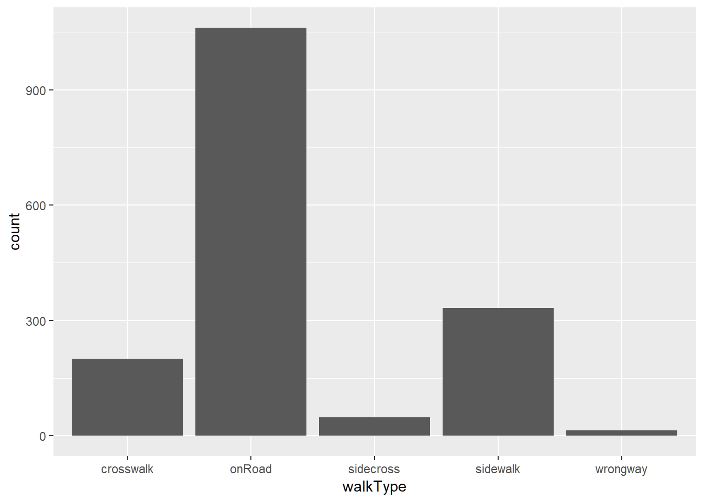
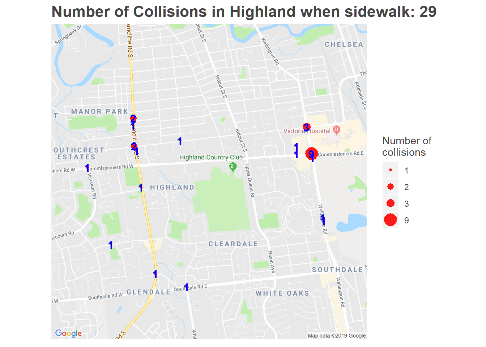

2 London Ontario’s Cycling Safety Report 2019
2.1 Introduction
The collision and injury/fatality data were obtained from the London Police Services’ collisions reports for the time period 2006-2017. This database contains information on all police-reported cyclist-motor vehicle collisions that occur in the City.
2.2 Key issue: Sidewalk cycling
Approximately 35% of the collisions occurred where bicycle users were reportedly riding on the sidewalk, in the crosswalk or riding from the sidewalk and into the crosswalk. Sidewalk cycling can create safety concerns because cyclists are less visible to motorists on the sidewalk, and may not be expecting cyclists at intersections or conflict zones.
cat("Count:\n")## Count:table(collision$walkType)##
## crosswalk onRoad sidecross sidewalk wrongway
## 201 1061 48 332 14cat("Ratio:\n")## Ratio:table(collision$walkType)/nrow(collision)##
## crosswalk onRoad sidecross sidewalk wrongway
## 0.121376812 0.640700483 0.028985507 0.200483092 0.008454106collision %>%
ggplot(aes(walkType))+
geom_bar()
with(table(walkType,injury),data = collision)## injury
## walkType 00 none 01 minimal 02 minor 03 major 04 fatal
## crosswalk 12 79 94 8 0
## onRoad 54 379 468 48 9
## sidecross 3 19 22 2 0
## sidewalk 20 126 155 4 0
## wrongway 0 6 4 1 02.3 Charges laid by police
This area is about charges in London.
2.3.1 Number of charges for adults
Among collisions involving adult cyclists, 576/1375 cyclists were charged, and 396/1375 motorists were charged. Among all collisions, 650/1656 cyclists were charged; 447/1656 drivers were charged.Kids are 17 and under.
kidonROad <- collision$cAge <= 17
nrow((collision[setdiff(1:nrow(collision),which(!kidonROad)),]))## [1] 1656sum(collision[setdiff(1:nrow(collision),which(!kidonROad)),]$iscCharge)## [1] 650sum(collision[setdiff(1:nrow(collision),which(!kidonROad)),]$isdCharge)## [1] 447nrow(collision)## [1] 1656sum(collision$iscCharge)## [1] 650sum(collision$isdCharge)## [1] 4472.3.2 Charges against cyclists
Of the cyclists reported to be riding on the sidewalk or crosswalk, 76% were charged by the police. However, the charges ranged from sidewalk riding, to not meeting safety requirements, such as a having a bell. Cyclists weren’t necessarily charged with “sidewalk cycling”. In contrast, police laid charges in 22.4% of cyclistst were charged when riding on the road. These cyclists on the road were
**However, this doesn’t include children ages 14-17 who may have been charged with sidewalk cycling because we would have to chagne the definition of child.
#sum(collision$iscCharge & collision$is_kid, na.rm=TRUE)
#sum(collision$iscCharge & !collision$is_kid, na.rm=TRUE)
#which(is.na(collision$iscCharge & collision$is_kid))
count1 <- with(data = collision[setdiff(1:nrow(collision),which(collision$is_kid)),],
table(walkType2,iscCharge))
ratio1 <- count1/rowSums(count1)
ratio1## iscCharge
## walkType2 FALSE TRUE
## Other 0.7756264 0.2243736
## sidewalkCycling 0.2374245 0.7625755#
table(collision$is_intersection)##
## FALSE TRUE
## 977 6792.3.3 Charge of cyclists vs rain
We expected to see an increase in charges against cyclists and drivers in the rain, but this was not significant.There was not an increase in multiple charges in the rain.
count1 <- with(data = collision[collision$iscCharge,],table(rain,is_cMultiple))
ratio1 <- count1/rowSums(count1)
ratio1## is_cMultiple
## rain FALSE TRUE
## clear 0.91156463 0.08843537
## other 1.00000000 0.00000000
## rain 0.88679245 0.11320755prop.test(count1[c(1,3),2],n=rowSums(count1)[c(1,3)],alternative = "less")##
## 2-sample test for equality of proportions with continuity
## correction
##
## data: count1[c(1, 3), 2] out of rowSums(count1)[c(1, 3)]
## X-squared = 0.124, df = 1, p-value = 0.3624
## alternative hypothesis: less
## 95 percent confidence interval:
## -1.00000000 0.05964524
## sample estimates:
## prop 1 prop 2
## 0.08843537 0.11320755count2 <- with(data = collision,table(rain,iscCharge))
ratio2 <- count2/rowSums(count2)
ratio2## iscCharge
## rain FALSE TRUE
## clear 0.6085220 0.3914780
## other 0.6086957 0.3913043
## rain 0.5954198 0.4045802prop.test(count2[c(1,3),2],n=rowSums(count2)[c(1,3)],alternative = "less")##
## 2-sample test for equality of proportions with continuity
## correction
##
## data: count2[c(1, 3), 2] out of rowSums(count2)[c(1, 3)]
## X-squared = 0.040499, df = 1, p-value = 0.4203
## alternative hypothesis: less
## 95 percent confidence interval:
## -1.00000000 0.06456161
## sample estimates:
## prop 1 prop 2
## 0.3914780 0.40458022.3.4 Charge of drivers vs rain
See above
count1 <- with(data = collision[collision$isdCharge,],table(rain,is_dMultiple))
ratio1 <- count1/rowSums(count1)
ratio1## is_dMultiple
## rain FALSE TRUE
## clear 0.90841584 0.09158416
## other 1.00000000 0.00000000
## rain 0.92105263 0.07894737prop.test(count1[c(1,3),2],n=rowSums(count1)[c(1,3)],alternative = "less")##
## 2-sample test for equality of proportions with continuity
## correction
##
## data: count1[c(1, 3), 2] out of rowSums(count1)[c(1, 3)]
## X-squared = 9.3806e-31, df = 1, p-value = 0.5
## alternative hypothesis: less
## 95 percent confidence interval:
## -1.000000 0.100999
## sample estimates:
## prop 1 prop 2
## 0.09158416 0.07894737count2 <- with(data = collision,table(rain,isdCharge))
ratio2 <- count2/rowSums(count2)
ratio2## isdCharge
## rain FALSE TRUE
## clear 0.7310253 0.2689747
## other 0.7826087 0.2173913
## rain 0.7099237 0.2900763prop.test(count2[c(1,3),2],n=rowSums(count2)[c(1,3)],alternative = "less")##
## 2-sample test for equality of proportions with continuity
## correction
##
## data: count2[c(1, 3), 2] out of rowSums(count2)[c(1, 3)]
## X-squared = 0.1754, df = 1, p-value = 0.3377
## alternative hypothesis: less
## 95 percent confidence interval:
## -1.00000000 0.05092514
## sample estimates:
## prop 1 prop 2
## 0.2689747 0.29007632.3.5 Charge of drivers vs walking
count1 <- with(data = collision[collision$isdCharge,],table(walkType2,is_dMultiple))
ratio1 <- count1/rowSums(count1)
ratio1## is_dMultiple
## walkType2 FALSE TRUE
## Other 0.89877301 0.10122699
## sidewalkCycling 0.94214876 0.057851242.4 fault
#mistake, motorist's fault when cyclist charged
length(which(!is.na(collision$cCharge) & is.na(collision$dCharge) & (collision$fault=="Vfault")))## [1] 1622.5 Environment
table(collision$environment)##
## clear other rain
## 1502 23 1312.6 Manoeuver
1464 collisions have complete locationType and Manoeuver. Among them,
Manoeuver <- as.data.frame(table(collision$cManoeuver,
collision$dManoeuver,
#collision$traControl,
#collision$walkType,
collision$locationType,
collision$reDirection2))
colnames(Manoeuver) <- c("cManoeuver",
"dManoeuver",
# "traControl",
"locationType",
"reDirection2",
"Crash")
Manoeuver2 <- Manoeuver[order(Manoeuver$Crash,decreasing = T),]
Manoeuver2$Percent <- (Manoeuver2$Crash)/sum(Manoeuver2$Crash)
Manoeuver2$cumPercent <- cumsum(Manoeuver2$Crash)/sum(Manoeuver2$Crash)
sum(Manoeuver2$Crash)## [1] 1453rownames(Manoeuver2) <- NULL
Manoeuver2## cManoeuver dManoeuver locationType reDirection2 Crash
## 1 going ahead turning right intersection orthogonal 227
## 2 going ahead going ahead intersection orthogonal 161
## 3 going ahead turning left intersection orthogonal 88
## 4 going ahead turning right intersection opposite 84
## 5 going ahead going ahead intersection opposite 69
## 6 going ahead going ahead private-drive orthogonal 64
## 7 going ahead turning right intersection same 53
## 8 going ahead turning right private-drive orthogonal 41
## 9 going ahead going ahead non-intersection same 41
## 10 going ahead turning left intersection opposite 37
## 11 going ahead going ahead non-intersection orthogonal 33
## 12 going ahead stopped intersection orthogonal 27
## 13 going ahead turning right private-drive same 26
## 14 going ahead going ahead private-drive opposite 24
## 15 going ahead going ahead intersection same 22
## 16 going ahead turning left intersection same 19
## 17 going ahead changing lanes non-intersection same 19
## 18 changing lanes going ahead non-intersection same 17
## 19 going ahead stopped private-drive orthogonal 16
## 20 going ahead stopped intersection opposite 15
## 21 going ahead turning right private-drive opposite 15
## 22 going ahead turning left private-drive orthogonal 15
## 23 going ahead turning left private-drive opposite 14
## 24 going ahead going ahead parking orthogonal 14
## 25 turning left going ahead intersection orthogonal 12
## 26 turning left going ahead intersection same 12
## 27 going ahead turning right non-intersection orthogonal 10
## 28 going ahead going ahead non-intersection opposite 9
## 29 going ahead changing lanes intersection same 9
## 30 going ahead going ahead private-drive same 9
## 31 going ahead reversing private-drive orthogonal 8
## 32 turning left going ahead non-intersection same 8
## 33 going ahead turning left private-drive same 8
## 34 other going ahead intersection orthogonal 7
## 35 going ahead stopped non-intersection orthogonal 7
## 36 changing lanes going ahead intersection same 7
## 37 going ahead going ahead other same 7
## 38 going ahead going ahead parking opposite 6
## 39 turning right turning right intersection same 5
## 40 other turning right intersection opposite 4
## 41 other going ahead non-intersection opposite 4
## 42 going ahead turning right non-intersection opposite 4
## 43 turning left going ahead private-drive opposite 4
## 44 going ahead stopped private-drive opposite 4
## 45 turning right going ahead intersection orthogonal 4
## 46 going ahead other intersection orthogonal 4
## 47 turning left turning left intersection orthogonal 4
## 48 going ahead turning left non-intersection orthogonal 4
## 49 going ahead reversing parking orthogonal 4
## 50 going ahead turning right parking orthogonal 4
## 51 stopped going ahead intersection same 4
## 52 going ahead stopped intersection same 4
## 53 other going ahead non-intersection same 4
## 54 going ahead reversing private-drive opposite 3
## 55 going ahead changing lanes intersection orthogonal 3
## 56 turning right turning left intersection orthogonal 3
## 57 turning left turning right intersection orthogonal 3
## 58 other going ahead non-intersection orthogonal 3
## 59 turning left going ahead non-intersection orthogonal 3
## 60 going ahead reversing non-intersection orthogonal 3
## 61 going ahead other intersection same 3
## 62 changing lanes stopped intersection same 3
## 63 turning left turning left intersection same 3
## 64 going ahead other non-intersection same 3
## 65 turning left going ahead private-drive same 3
## 66 going ahead other intersection opposite 2
## 67 turning right turning right intersection opposite 2
## 68 turning left going ahead non-intersection opposite 2
## 69 going ahead stopped non-intersection opposite 2
## 70 going ahead going ahead other opposite 2
## 71 going ahead reversing parking opposite 2
## 72 stopped going ahead intersection orthogonal 2
## 73 other turning left intersection orthogonal 2
## 74 stopped turning left intersection orthogonal 2
## 75 changing lanes going ahead non-intersection orthogonal 2
## 76 turning right going ahead non-intersection orthogonal 2
## 77 going ahead other non-intersection orthogonal 2
## 78 going ahead going ahead other orthogonal 2
## 79 going ahead turning left other orthogonal 2
## 80 going ahead turning left parking orthogonal 2
## 81 turning right going ahead private-drive orthogonal 2
## 82 turning right going ahead intersection same 2
## 83 changing lanes changing lanes non-intersection same 2
## 84 turning left changing lanes non-intersection same 2
## 85 turning right going ahead non-intersection same 2
## 86 going ahead reversing non-intersection same 2
## 87 going ahead stopped non-intersection same 2
## 88 going ahead going ahead parking same 2
## 89 going ahead turning right parking same 2
## 90 going ahead changing lanes private-drive same 2
## 91 changing lanes turning right private-drive same 2
## 92 changing lanes changing lanes intersection opposite 1
## 93 turning left going ahead intersection opposite 1
## 94 stopped turning left intersection opposite 1
## 95 stopped going ahead non-intersection opposite 1
## 96 going ahead reversing non-intersection opposite 1
## 97 going ahead turning left non-intersection opposite 1
## 98 turning left turning left other opposite 1
## 99 going ahead turning right other opposite 1
## 100 stopped going ahead parking opposite 1
## 101 going ahead stopped parking opposite 1
## 102 going ahead turning left parking opposite 1
## 103 turning right turning left parking opposite 1
## 104 other stopped private-drive opposite 1
## 105 changing lanes stopped intersection orthogonal 1
## 106 turning right stopped intersection orthogonal 1
## 107 other turning right intersection orthogonal 1
## 108 stopped turning right intersection orthogonal 1
## 109 turning right turning right intersection orthogonal 1
## 110 other other non-intersection orthogonal 1
## 111 stopped turning right non-intersection orthogonal 1
## 112 going ahead turning right other orthogonal 1
## 113 going ahead other parking orthogonal 1
## 114 going ahead stopped parking orthogonal 1
## 115 turning right stopped parking orthogonal 1
## 116 turning left going ahead private-drive orthogonal 1
## 117 stopped turning right private-drive orthogonal 1
## 118 changing lanes changing lanes intersection same 1
## 119 turning left changing lanes intersection same 1
## 120 other going ahead intersection same 1
## 121 stopped stopped intersection same 1
## 122 stopped turning left intersection same 1
## 123 changing lanes other non-intersection same 1
## 124 changing lanes stopped non-intersection same 1
## 125 stopped stopped non-intersection same 1
## 126 going ahead turning left non-intersection same 1
## 127 going ahead turning right non-intersection same 1
## 128 going ahead changing lanes other same 1
## 129 turning left going ahead other same 1
## 130 going ahead stopped other same 1
## 131 turning left turning right other same 1
## 132 turning right turning right other same 1
## 133 stopped changing lanes private-drive same 1
## 134 other going ahead private-drive same 1
## 135 going ahead stopped private-drive same 1
## 136 going ahead changing lanes intersection opposite 0
## 137 other changing lanes intersection opposite 0
## 138 stopped changing lanes intersection opposite 0
## 139 turning left changing lanes intersection opposite 0
## 140 turning right changing lanes intersection opposite 0
## 141 changing lanes going ahead intersection opposite 0
## 142 other going ahead intersection opposite 0
## 143 stopped going ahead intersection opposite 0
## 144 turning right going ahead intersection opposite 0
## 145 changing lanes other intersection opposite 0
## 146 other other intersection opposite 0
## 147 stopped other intersection opposite 0
## 148 turning left other intersection opposite 0
## 149 turning right other intersection opposite 0
## 150 changing lanes reversing intersection opposite 0
## 151 going ahead reversing intersection opposite 0
## 152 other reversing intersection opposite 0
## 153 stopped reversing intersection opposite 0
## 154 turning left reversing intersection opposite 0
## 155 turning right reversing intersection opposite 0
## 156 changing lanes stopped intersection opposite 0
## 157 other stopped intersection opposite 0
## 158 stopped stopped intersection opposite 0
## 159 turning left stopped intersection opposite 0
## 160 turning right stopped intersection opposite 0
## 161 changing lanes turning left intersection opposite 0
## 162 other turning left intersection opposite 0
## 163 turning left turning left intersection opposite 0
## 164 turning right turning left intersection opposite 0
## 165 changing lanes turning right intersection opposite 0
## 166 stopped turning right intersection opposite 0
## 167 turning left turning right intersection opposite 0
## 168 changing lanes changing lanes non-intersection opposite 0
## 169 going ahead changing lanes non-intersection opposite 0
## 170 other changing lanes non-intersection opposite 0
## 171 stopped changing lanes non-intersection opposite 0
## 172 turning left changing lanes non-intersection opposite 0
## 173 turning right changing lanes non-intersection opposite 0
## 174 changing lanes going ahead non-intersection opposite 0
## 175 turning right going ahead non-intersection opposite 0
## 176 changing lanes other non-intersection opposite 0
## 177 going ahead other non-intersection opposite 0
## 178 other other non-intersection opposite 0
## 179 stopped other non-intersection opposite 0
## 180 turning left other non-intersection opposite 0
## 181 turning right other non-intersection opposite 0
## 182 changing lanes reversing non-intersection opposite 0
## 183 other reversing non-intersection opposite 0
## 184 stopped reversing non-intersection opposite 0
## 185 turning left reversing non-intersection opposite 0
## 186 turning right reversing non-intersection opposite 0
## 187 changing lanes stopped non-intersection opposite 0
## 188 other stopped non-intersection opposite 0
## 189 stopped stopped non-intersection opposite 0
## 190 turning left stopped non-intersection opposite 0
## 191 turning right stopped non-intersection opposite 0
## 192 changing lanes turning left non-intersection opposite 0
## 193 other turning left non-intersection opposite 0
## 194 stopped turning left non-intersection opposite 0
## 195 turning left turning left non-intersection opposite 0
## 196 turning right turning left non-intersection opposite 0
## 197 changing lanes turning right non-intersection opposite 0
## 198 other turning right non-intersection opposite 0
## 199 stopped turning right non-intersection opposite 0
## 200 turning left turning right non-intersection opposite 0
## 201 turning right turning right non-intersection opposite 0
## 202 changing lanes changing lanes other opposite 0
## 203 going ahead changing lanes other opposite 0
## 204 other changing lanes other opposite 0
## 205 stopped changing lanes other opposite 0
## 206 turning left changing lanes other opposite 0
## 207 turning right changing lanes other opposite 0
## 208 changing lanes going ahead other opposite 0
## 209 other going ahead other opposite 0
## 210 stopped going ahead other opposite 0
## 211 turning left going ahead other opposite 0
## 212 turning right going ahead other opposite 0
## 213 changing lanes other other opposite 0
## 214 going ahead other other opposite 0
## 215 other other other opposite 0
## 216 stopped other other opposite 0
## 217 turning left other other opposite 0
## 218 turning right other other opposite 0
## 219 changing lanes reversing other opposite 0
## 220 going ahead reversing other opposite 0
## 221 other reversing other opposite 0
## 222 stopped reversing other opposite 0
## 223 turning left reversing other opposite 0
## 224 turning right reversing other opposite 0
## 225 changing lanes stopped other opposite 0
## 226 going ahead stopped other opposite 0
## 227 other stopped other opposite 0
## 228 stopped stopped other opposite 0
## 229 turning left stopped other opposite 0
## 230 turning right stopped other opposite 0
## 231 changing lanes turning left other opposite 0
## 232 going ahead turning left other opposite 0
## 233 other turning left other opposite 0
## 234 stopped turning left other opposite 0
## 235 turning right turning left other opposite 0
## 236 changing lanes turning right other opposite 0
## 237 other turning right other opposite 0
## 238 stopped turning right other opposite 0
## 239 turning left turning right other opposite 0
## 240 turning right turning right other opposite 0
## 241 changing lanes changing lanes parking opposite 0
## 242 going ahead changing lanes parking opposite 0
## 243 other changing lanes parking opposite 0
## 244 stopped changing lanes parking opposite 0
## 245 turning left changing lanes parking opposite 0
## 246 turning right changing lanes parking opposite 0
## 247 changing lanes going ahead parking opposite 0
## 248 other going ahead parking opposite 0
## 249 turning left going ahead parking opposite 0
## 250 turning right going ahead parking opposite 0
## 251 changing lanes other parking opposite 0
## 252 going ahead other parking opposite 0
## 253 other other parking opposite 0
## 254 stopped other parking opposite 0
## 255 turning left other parking opposite 0
## 256 turning right other parking opposite 0
## 257 changing lanes reversing parking opposite 0
## 258 other reversing parking opposite 0
## 259 stopped reversing parking opposite 0
## 260 turning left reversing parking opposite 0
## 261 turning right reversing parking opposite 0
## 262 changing lanes stopped parking opposite 0
## 263 other stopped parking opposite 0
## 264 stopped stopped parking opposite 0
## 265 turning left stopped parking opposite 0
## 266 turning right stopped parking opposite 0
## 267 changing lanes turning left parking opposite 0
## 268 other turning left parking opposite 0
## 269 stopped turning left parking opposite 0
## 270 turning left turning left parking opposite 0
## 271 changing lanes turning right parking opposite 0
## 272 going ahead turning right parking opposite 0
## 273 other turning right parking opposite 0
## 274 stopped turning right parking opposite 0
## 275 turning left turning right parking opposite 0
## 276 turning right turning right parking opposite 0
## 277 changing lanes changing lanes private-drive opposite 0
## 278 going ahead changing lanes private-drive opposite 0
## 279 other changing lanes private-drive opposite 0
## 280 stopped changing lanes private-drive opposite 0
## 281 turning left changing lanes private-drive opposite 0
## 282 turning right changing lanes private-drive opposite 0
## 283 changing lanes going ahead private-drive opposite 0
## 284 other going ahead private-drive opposite 0
## 285 stopped going ahead private-drive opposite 0
## 286 turning right going ahead private-drive opposite 0
## 287 changing lanes other private-drive opposite 0
## 288 going ahead other private-drive opposite 0
## 289 other other private-drive opposite 0
## 290 stopped other private-drive opposite 0
## 291 turning left other private-drive opposite 0
## 292 turning right other private-drive opposite 0
## 293 changing lanes reversing private-drive opposite 0
## 294 other reversing private-drive opposite 0
## 295 stopped reversing private-drive opposite 0
## 296 turning left reversing private-drive opposite 0
## 297 turning right reversing private-drive opposite 0
## 298 changing lanes stopped private-drive opposite 0
## 299 stopped stopped private-drive opposite 0
## 300 turning left stopped private-drive opposite 0
## 301 turning right stopped private-drive opposite 0
## 302 changing lanes turning left private-drive opposite 0
## 303 other turning left private-drive opposite 0
## 304 stopped turning left private-drive opposite 0
## 305 turning left turning left private-drive opposite 0
## 306 turning right turning left private-drive opposite 0
## 307 changing lanes turning right private-drive opposite 0
## 308 other turning right private-drive opposite 0
## 309 stopped turning right private-drive opposite 0
## 310 turning left turning right private-drive opposite 0
## 311 turning right turning right private-drive opposite 0
## 312 changing lanes changing lanes intersection orthogonal 0
## 313 other changing lanes intersection orthogonal 0
## 314 stopped changing lanes intersection orthogonal 0
## 315 turning left changing lanes intersection orthogonal 0
## 316 turning right changing lanes intersection orthogonal 0
## 317 changing lanes going ahead intersection orthogonal 0
## 318 changing lanes other intersection orthogonal 0
## 319 other other intersection orthogonal 0
## 320 stopped other intersection orthogonal 0
## 321 turning left other intersection orthogonal 0
## 322 turning right other intersection orthogonal 0
## 323 changing lanes reversing intersection orthogonal 0
## 324 going ahead reversing intersection orthogonal 0
## 325 other reversing intersection orthogonal 0
## 326 stopped reversing intersection orthogonal 0
## 327 turning left reversing intersection orthogonal 0
## 328 turning right reversing intersection orthogonal 0
## 329 other stopped intersection orthogonal 0
## 330 stopped stopped intersection orthogonal 0
## 331 turning left stopped intersection orthogonal 0
## 332 changing lanes turning left intersection orthogonal 0
## 333 changing lanes turning right intersection orthogonal 0
## 334 changing lanes changing lanes non-intersection orthogonal 0
## 335 going ahead changing lanes non-intersection orthogonal 0
## 336 other changing lanes non-intersection orthogonal 0
## 337 stopped changing lanes non-intersection orthogonal 0
## 338 turning left changing lanes non-intersection orthogonal 0
## 339 turning right changing lanes non-intersection orthogonal 0
## 340 stopped going ahead non-intersection orthogonal 0
## 341 changing lanes other non-intersection orthogonal 0
## 342 stopped other non-intersection orthogonal 0
## 343 turning left other non-intersection orthogonal 0
## 344 turning right other non-intersection orthogonal 0
## 345 changing lanes reversing non-intersection orthogonal 0
## 346 other reversing non-intersection orthogonal 0
## 347 stopped reversing non-intersection orthogonal 0
## 348 turning left reversing non-intersection orthogonal 0
## 349 turning right reversing non-intersection orthogonal 0
## 350 changing lanes stopped non-intersection orthogonal 0
## 351 other stopped non-intersection orthogonal 0
## 352 stopped stopped non-intersection orthogonal 0
## 353 turning left stopped non-intersection orthogonal 0
## 354 turning right stopped non-intersection orthogonal 0
## 355 changing lanes turning left non-intersection orthogonal 0
## 356 other turning left non-intersection orthogonal 0
## 357 stopped turning left non-intersection orthogonal 0
## 358 turning left turning left non-intersection orthogonal 0
## 359 turning right turning left non-intersection orthogonal 0
## 360 changing lanes turning right non-intersection orthogonal 0
## 361 other turning right non-intersection orthogonal 0
## 362 turning left turning right non-intersection orthogonal 0
## 363 turning right turning right non-intersection orthogonal 0
## 364 changing lanes changing lanes other orthogonal 0
## 365 going ahead changing lanes other orthogonal 0
## 366 other changing lanes other orthogonal 0
## 367 stopped changing lanes other orthogonal 0
## 368 turning left changing lanes other orthogonal 0
## 369 turning right changing lanes other orthogonal 0
## 370 changing lanes going ahead other orthogonal 0
## 371 other going ahead other orthogonal 0
## 372 stopped going ahead other orthogonal 0
## 373 turning left going ahead other orthogonal 0
## 374 turning right going ahead other orthogonal 0
## 375 changing lanes other other orthogonal 0
## 376 going ahead other other orthogonal 0
## 377 other other other orthogonal 0
## 378 stopped other other orthogonal 0
## 379 turning left other other orthogonal 0
## 380 turning right other other orthogonal 0
## 381 changing lanes reversing other orthogonal 0
## 382 going ahead reversing other orthogonal 0
## 383 other reversing other orthogonal 0
## 384 stopped reversing other orthogonal 0
## 385 turning left reversing other orthogonal 0
## 386 turning right reversing other orthogonal 0
## 387 changing lanes stopped other orthogonal 0
## 388 going ahead stopped other orthogonal 0
## 389 other stopped other orthogonal 0
## 390 stopped stopped other orthogonal 0
## 391 turning left stopped other orthogonal 0
## 392 turning right stopped other orthogonal 0
## 393 changing lanes turning left other orthogonal 0
## 394 other turning left other orthogonal 0
## 395 stopped turning left other orthogonal 0
## 396 turning left turning left other orthogonal 0
## 397 turning right turning left other orthogonal 0
## 398 changing lanes turning right other orthogonal 0
## 399 other turning right other orthogonal 0
## 400 stopped turning right other orthogonal 0
## 401 turning left turning right other orthogonal 0
## 402 turning right turning right other orthogonal 0
## 403 changing lanes changing lanes parking orthogonal 0
## 404 going ahead changing lanes parking orthogonal 0
## 405 other changing lanes parking orthogonal 0
## 406 stopped changing lanes parking orthogonal 0
## 407 turning left changing lanes parking orthogonal 0
## 408 turning right changing lanes parking orthogonal 0
## 409 changing lanes going ahead parking orthogonal 0
## 410 other going ahead parking orthogonal 0
## 411 stopped going ahead parking orthogonal 0
## 412 turning left going ahead parking orthogonal 0
## 413 turning right going ahead parking orthogonal 0
## 414 changing lanes other parking orthogonal 0
## 415 other other parking orthogonal 0
## 416 stopped other parking orthogonal 0
## 417 turning left other parking orthogonal 0
## 418 turning right other parking orthogonal 0
## 419 changing lanes reversing parking orthogonal 0
## 420 other reversing parking orthogonal 0
## 421 stopped reversing parking orthogonal 0
## 422 turning left reversing parking orthogonal 0
## 423 turning right reversing parking orthogonal 0
## 424 changing lanes stopped parking orthogonal 0
## 425 other stopped parking orthogonal 0
## 426 stopped stopped parking orthogonal 0
## 427 turning left stopped parking orthogonal 0
## 428 changing lanes turning left parking orthogonal 0
## 429 other turning left parking orthogonal 0
## 430 stopped turning left parking orthogonal 0
## 431 turning left turning left parking orthogonal 0
## 432 turning right turning left parking orthogonal 0
## 433 changing lanes turning right parking orthogonal 0
## 434 other turning right parking orthogonal 0
## 435 stopped turning right parking orthogonal 0
## 436 turning left turning right parking orthogonal 0
## 437 turning right turning right parking orthogonal 0
## 438 changing lanes changing lanes private-drive orthogonal 0
## 439 going ahead changing lanes private-drive orthogonal 0
## 440 other changing lanes private-drive orthogonal 0
## 441 stopped changing lanes private-drive orthogonal 0
## 442 turning left changing lanes private-drive orthogonal 0
## 443 turning right changing lanes private-drive orthogonal 0
## 444 changing lanes going ahead private-drive orthogonal 0
## 445 other going ahead private-drive orthogonal 0
## 446 stopped going ahead private-drive orthogonal 0
## 447 changing lanes other private-drive orthogonal 0
## 448 going ahead other private-drive orthogonal 0
## 449 other other private-drive orthogonal 0
## 450 stopped other private-drive orthogonal 0
## 451 turning left other private-drive orthogonal 0
## 452 turning right other private-drive orthogonal 0
## 453 changing lanes reversing private-drive orthogonal 0
## 454 other reversing private-drive orthogonal 0
## 455 stopped reversing private-drive orthogonal 0
## 456 turning left reversing private-drive orthogonal 0
## 457 turning right reversing private-drive orthogonal 0
## 458 changing lanes stopped private-drive orthogonal 0
## 459 other stopped private-drive orthogonal 0
## 460 stopped stopped private-drive orthogonal 0
## 461 turning left stopped private-drive orthogonal 0
## 462 turning right stopped private-drive orthogonal 0
## 463 changing lanes turning left private-drive orthogonal 0
## 464 other turning left private-drive orthogonal 0
## 465 stopped turning left private-drive orthogonal 0
## 466 turning left turning left private-drive orthogonal 0
## 467 turning right turning left private-drive orthogonal 0
## 468 changing lanes turning right private-drive orthogonal 0
## 469 other turning right private-drive orthogonal 0
## 470 turning left turning right private-drive orthogonal 0
## 471 turning right turning right private-drive orthogonal 0
## 472 other changing lanes intersection same 0
## 473 stopped changing lanes intersection same 0
## 474 turning right changing lanes intersection same 0
## 475 changing lanes other intersection same 0
## 476 other other intersection same 0
## 477 stopped other intersection same 0
## 478 turning left other intersection same 0
## 479 turning right other intersection same 0
## 480 changing lanes reversing intersection same 0
## 481 going ahead reversing intersection same 0
## 482 other reversing intersection same 0
## 483 stopped reversing intersection same 0
## 484 turning left reversing intersection same 0
## 485 turning right reversing intersection same 0
## 486 other stopped intersection same 0
## 487 turning left stopped intersection same 0
## 488 turning right stopped intersection same 0
## 489 changing lanes turning left intersection same 0
## 490 other turning left intersection same 0
## 491 turning right turning left intersection same 0
## 492 changing lanes turning right intersection same 0
## 493 other turning right intersection same 0
## 494 stopped turning right intersection same 0
## 495 turning left turning right intersection same 0
## 496 other changing lanes non-intersection same 0
## 497 stopped changing lanes non-intersection same 0
## 498 turning right changing lanes non-intersection same 0
## 499 stopped going ahead non-intersection same 0
## 500 other other non-intersection same 0
## 501 stopped other non-intersection same 0
## 502 turning left other non-intersection same 0
## 503 turning right other non-intersection same 0
## 504 changing lanes reversing non-intersection same 0
## 505 other reversing non-intersection same 0
## 506 stopped reversing non-intersection same 0
## 507 turning left reversing non-intersection same 0
## 508 turning right reversing non-intersection same 0
## 509 other stopped non-intersection same 0
## 510 turning left stopped non-intersection same 0
## 511 turning right stopped non-intersection same 0
## 512 changing lanes turning left non-intersection same 0
## 513 other turning left non-intersection same 0
## 514 stopped turning left non-intersection same 0
## 515 turning left turning left non-intersection same 0
## 516 turning right turning left non-intersection same 0
## 517 changing lanes turning right non-intersection same 0
## 518 other turning right non-intersection same 0
## 519 stopped turning right non-intersection same 0
## 520 turning left turning right non-intersection same 0
## 521 turning right turning right non-intersection same 0
## 522 changing lanes changing lanes other same 0
## 523 other changing lanes other same 0
## 524 stopped changing lanes other same 0
## 525 turning left changing lanes other same 0
## 526 turning right changing lanes other same 0
## 527 changing lanes going ahead other same 0
## 528 other going ahead other same 0
## 529 stopped going ahead other same 0
## 530 turning right going ahead other same 0
## 531 changing lanes other other same 0
## 532 going ahead other other same 0
## 533 other other other same 0
## 534 stopped other other same 0
## 535 turning left other other same 0
## 536 turning right other other same 0
## 537 changing lanes reversing other same 0
## 538 going ahead reversing other same 0
## 539 other reversing other same 0
## 540 stopped reversing other same 0
## 541 turning left reversing other same 0
## 542 turning right reversing other same 0
## 543 changing lanes stopped other same 0
## 544 other stopped other same 0
## 545 stopped stopped other same 0
## 546 turning left stopped other same 0
## 547 turning right stopped other same 0
## 548 changing lanes turning left other same 0
## 549 going ahead turning left other same 0
## 550 other turning left other same 0
## 551 stopped turning left other same 0
## 552 turning left turning left other same 0
## 553 turning right turning left other same 0
## 554 changing lanes turning right other same 0
## 555 going ahead turning right other same 0
## 556 other turning right other same 0
## 557 stopped turning right other same 0
## 558 changing lanes changing lanes parking same 0
## 559 going ahead changing lanes parking same 0
## 560 other changing lanes parking same 0
## 561 stopped changing lanes parking same 0
## 562 turning left changing lanes parking same 0
## 563 turning right changing lanes parking same 0
## 564 changing lanes going ahead parking same 0
## 565 other going ahead parking same 0
## 566 stopped going ahead parking same 0
## 567 turning left going ahead parking same 0
## 568 turning right going ahead parking same 0
## 569 changing lanes other parking same 0
## 570 going ahead other parking same 0
## 571 other other parking same 0
## 572 stopped other parking same 0
## 573 turning left other parking same 0
## 574 turning right other parking same 0
## 575 changing lanes reversing parking same 0
## 576 going ahead reversing parking same 0
## 577 other reversing parking same 0
## 578 stopped reversing parking same 0
## 579 turning left reversing parking same 0
## 580 turning right reversing parking same 0
## 581 changing lanes stopped parking same 0
## 582 going ahead stopped parking same 0
## 583 other stopped parking same 0
## 584 stopped stopped parking same 0
## 585 turning left stopped parking same 0
## 586 turning right stopped parking same 0
## 587 changing lanes turning left parking same 0
## 588 going ahead turning left parking same 0
## 589 other turning left parking same 0
## 590 stopped turning left parking same 0
## 591 turning left turning left parking same 0
## 592 turning right turning left parking same 0
## 593 changing lanes turning right parking same 0
## 594 other turning right parking same 0
## 595 stopped turning right parking same 0
## 596 turning left turning right parking same 0
## 597 turning right turning right parking same 0
## 598 changing lanes changing lanes private-drive same 0
## 599 other changing lanes private-drive same 0
## 600 turning left changing lanes private-drive same 0
## 601 turning right changing lanes private-drive same 0
## 602 changing lanes going ahead private-drive same 0
## 603 stopped going ahead private-drive same 0
## 604 turning right going ahead private-drive same 0
## 605 changing lanes other private-drive same 0
## 606 going ahead other private-drive same 0
## 607 other other private-drive same 0
## 608 stopped other private-drive same 0
## 609 turning left other private-drive same 0
## 610 turning right other private-drive same 0
## 611 changing lanes reversing private-drive same 0
## 612 going ahead reversing private-drive same 0
## 613 other reversing private-drive same 0
## 614 stopped reversing private-drive same 0
## 615 turning left reversing private-drive same 0
## 616 turning right reversing private-drive same 0
## 617 changing lanes stopped private-drive same 0
## 618 other stopped private-drive same 0
## 619 stopped stopped private-drive same 0
## 620 turning left stopped private-drive same 0
## 621 turning right stopped private-drive same 0
## 622 changing lanes turning left private-drive same 0
## 623 other turning left private-drive same 0
## 624 stopped turning left private-drive same 0
## 625 turning left turning left private-drive same 0
## 626 turning right turning left private-drive same 0
## 627 other turning right private-drive same 0
## 628 stopped turning right private-drive same 0
## 629 turning left turning right private-drive same 0
## 630 turning right turning right private-drive same 0
## Percent cumPercent
## 1 0.1562284928 0.1562285
## 2 0.1108052306 0.2670337
## 3 0.0605643496 0.3275981
## 4 0.0578114246 0.3854095
## 5 0.0474879560 0.4328975
## 6 0.0440467997 0.4769443
## 7 0.0364762560 0.5134205
## 8 0.0282174811 0.5416380
## 9 0.0282174811 0.5698555
## 10 0.0254645561 0.5953200
## 11 0.0227116311 0.6180317
## 12 0.0185822436 0.6366139
## 13 0.0178940124 0.6545079
## 14 0.0165175499 0.6710255
## 15 0.0151410874 0.6861666
## 16 0.0130763937 0.6992429
## 17 0.0130763937 0.7123193
## 18 0.0116999312 0.7240193
## 19 0.0110116999 0.7350310
## 20 0.0103234687 0.7453544
## 21 0.0103234687 0.7556779
## 22 0.0103234687 0.7660014
## 23 0.0096352374 0.7756366
## 24 0.0096352374 0.7852719
## 25 0.0082587749 0.7935306
## 26 0.0082587749 0.8017894
## 27 0.0068823125 0.8086717
## 28 0.0061940812 0.8148658
## 29 0.0061940812 0.8210599
## 30 0.0061940812 0.8272540
## 31 0.0055058500 0.8327598
## 32 0.0055058500 0.8382657
## 33 0.0055058500 0.8437715
## 34 0.0048176187 0.8485891
## 35 0.0048176187 0.8534067
## 36 0.0048176187 0.8582244
## 37 0.0048176187 0.8630420
## 38 0.0041293875 0.8671714
## 39 0.0034411562 0.8706125
## 40 0.0027529250 0.8733655
## 41 0.0027529250 0.8761184
## 42 0.0027529250 0.8788713
## 43 0.0027529250 0.8816242
## 44 0.0027529250 0.8843772
## 45 0.0027529250 0.8871301
## 46 0.0027529250 0.8898830
## 47 0.0027529250 0.8926359
## 48 0.0027529250 0.8953889
## 49 0.0027529250 0.8981418
## 50 0.0027529250 0.9008947
## 51 0.0027529250 0.9036476
## 52 0.0027529250 0.9064006
## 53 0.0027529250 0.9091535
## 54 0.0020646937 0.9112182
## 55 0.0020646937 0.9132829
## 56 0.0020646937 0.9153476
## 57 0.0020646937 0.9174123
## 58 0.0020646937 0.9194769
## 59 0.0020646937 0.9215416
## 60 0.0020646937 0.9236063
## 61 0.0020646937 0.9256710
## 62 0.0020646937 0.9277357
## 63 0.0020646937 0.9298004
## 64 0.0020646937 0.9318651
## 65 0.0020646937 0.9339298
## 66 0.0013764625 0.9353063
## 67 0.0013764625 0.9366827
## 68 0.0013764625 0.9380592
## 69 0.0013764625 0.9394357
## 70 0.0013764625 0.9408121
## 71 0.0013764625 0.9421886
## 72 0.0013764625 0.9435650
## 73 0.0013764625 0.9449415
## 74 0.0013764625 0.9463180
## 75 0.0013764625 0.9476944
## 76 0.0013764625 0.9490709
## 77 0.0013764625 0.9504474
## 78 0.0013764625 0.9518238
## 79 0.0013764625 0.9532003
## 80 0.0013764625 0.9545767
## 81 0.0013764625 0.9559532
## 82 0.0013764625 0.9573297
## 83 0.0013764625 0.9587061
## 84 0.0013764625 0.9600826
## 85 0.0013764625 0.9614591
## 86 0.0013764625 0.9628355
## 87 0.0013764625 0.9642120
## 88 0.0013764625 0.9655884
## 89 0.0013764625 0.9669649
## 90 0.0013764625 0.9683414
## 91 0.0013764625 0.9697178
## 92 0.0006882312 0.9704061
## 93 0.0006882312 0.9710943
## 94 0.0006882312 0.9717825
## 95 0.0006882312 0.9724708
## 96 0.0006882312 0.9731590
## 97 0.0006882312 0.9738472
## 98 0.0006882312 0.9745354
## 99 0.0006882312 0.9752237
## 100 0.0006882312 0.9759119
## 101 0.0006882312 0.9766001
## 102 0.0006882312 0.9772884
## 103 0.0006882312 0.9779766
## 104 0.0006882312 0.9786648
## 105 0.0006882312 0.9793531
## 106 0.0006882312 0.9800413
## 107 0.0006882312 0.9807295
## 108 0.0006882312 0.9814178
## 109 0.0006882312 0.9821060
## 110 0.0006882312 0.9827942
## 111 0.0006882312 0.9834825
## 112 0.0006882312 0.9841707
## 113 0.0006882312 0.9848589
## 114 0.0006882312 0.9855471
## 115 0.0006882312 0.9862354
## 116 0.0006882312 0.9869236
## 117 0.0006882312 0.9876118
## 118 0.0006882312 0.9883001
## 119 0.0006882312 0.9889883
## 120 0.0006882312 0.9896765
## 121 0.0006882312 0.9903648
## 122 0.0006882312 0.9910530
## 123 0.0006882312 0.9917412
## 124 0.0006882312 0.9924295
## 125 0.0006882312 0.9931177
## 126 0.0006882312 0.9938059
## 127 0.0006882312 0.9944942
## 128 0.0006882312 0.9951824
## 129 0.0006882312 0.9958706
## 130 0.0006882312 0.9965588
## 131 0.0006882312 0.9972471
## 132 0.0006882312 0.9979353
## 133 0.0006882312 0.9986235
## 134 0.0006882312 0.9993118
## 135 0.0006882312 1.0000000
## 136 0.0000000000 1.0000000
## 137 0.0000000000 1.0000000
## 138 0.0000000000 1.0000000
## 139 0.0000000000 1.0000000
## 140 0.0000000000 1.0000000
## 141 0.0000000000 1.0000000
## 142 0.0000000000 1.0000000
## 143 0.0000000000 1.0000000
## 144 0.0000000000 1.0000000
## 145 0.0000000000 1.0000000
## 146 0.0000000000 1.0000000
## 147 0.0000000000 1.0000000
## 148 0.0000000000 1.0000000
## 149 0.0000000000 1.0000000
## 150 0.0000000000 1.0000000
## 151 0.0000000000 1.0000000
## 152 0.0000000000 1.0000000
## 153 0.0000000000 1.0000000
## 154 0.0000000000 1.0000000
## 155 0.0000000000 1.0000000
## 156 0.0000000000 1.0000000
## 157 0.0000000000 1.0000000
## 158 0.0000000000 1.0000000
## 159 0.0000000000 1.0000000
## 160 0.0000000000 1.0000000
## 161 0.0000000000 1.0000000
## 162 0.0000000000 1.0000000
## 163 0.0000000000 1.0000000
## 164 0.0000000000 1.0000000
## 165 0.0000000000 1.0000000
## 166 0.0000000000 1.0000000
## 167 0.0000000000 1.0000000
## 168 0.0000000000 1.0000000
## 169 0.0000000000 1.0000000
## 170 0.0000000000 1.0000000
## 171 0.0000000000 1.0000000
## 172 0.0000000000 1.0000000
## 173 0.0000000000 1.0000000
## 174 0.0000000000 1.0000000
## 175 0.0000000000 1.0000000
## 176 0.0000000000 1.0000000
## 177 0.0000000000 1.0000000
## 178 0.0000000000 1.0000000
## 179 0.0000000000 1.0000000
## 180 0.0000000000 1.0000000
## 181 0.0000000000 1.0000000
## 182 0.0000000000 1.0000000
## 183 0.0000000000 1.0000000
## 184 0.0000000000 1.0000000
## 185 0.0000000000 1.0000000
## 186 0.0000000000 1.0000000
## 187 0.0000000000 1.0000000
## 188 0.0000000000 1.0000000
## 189 0.0000000000 1.0000000
## 190 0.0000000000 1.0000000
## 191 0.0000000000 1.0000000
## 192 0.0000000000 1.0000000
## 193 0.0000000000 1.0000000
## 194 0.0000000000 1.0000000
## 195 0.0000000000 1.0000000
## 196 0.0000000000 1.0000000
## 197 0.0000000000 1.0000000
## 198 0.0000000000 1.0000000
## 199 0.0000000000 1.0000000
## 200 0.0000000000 1.0000000
## 201 0.0000000000 1.0000000
## 202 0.0000000000 1.0000000
## 203 0.0000000000 1.0000000
## 204 0.0000000000 1.0000000
## 205 0.0000000000 1.0000000
## 206 0.0000000000 1.0000000
## 207 0.0000000000 1.0000000
## 208 0.0000000000 1.0000000
## 209 0.0000000000 1.0000000
## 210 0.0000000000 1.0000000
## 211 0.0000000000 1.0000000
## 212 0.0000000000 1.0000000
## 213 0.0000000000 1.0000000
## 214 0.0000000000 1.0000000
## 215 0.0000000000 1.0000000
## 216 0.0000000000 1.0000000
## 217 0.0000000000 1.0000000
## 218 0.0000000000 1.0000000
## 219 0.0000000000 1.0000000
## 220 0.0000000000 1.0000000
## 221 0.0000000000 1.0000000
## 222 0.0000000000 1.0000000
## 223 0.0000000000 1.0000000
## 224 0.0000000000 1.0000000
## 225 0.0000000000 1.0000000
## 226 0.0000000000 1.0000000
## 227 0.0000000000 1.0000000
## 228 0.0000000000 1.0000000
## 229 0.0000000000 1.0000000
## 230 0.0000000000 1.0000000
## 231 0.0000000000 1.0000000
## 232 0.0000000000 1.0000000
## 233 0.0000000000 1.0000000
## 234 0.0000000000 1.0000000
## 235 0.0000000000 1.0000000
## 236 0.0000000000 1.0000000
## 237 0.0000000000 1.0000000
## 238 0.0000000000 1.0000000
## 239 0.0000000000 1.0000000
## 240 0.0000000000 1.0000000
## 241 0.0000000000 1.0000000
## 242 0.0000000000 1.0000000
## 243 0.0000000000 1.0000000
## 244 0.0000000000 1.0000000
## 245 0.0000000000 1.0000000
## 246 0.0000000000 1.0000000
## 247 0.0000000000 1.0000000
## 248 0.0000000000 1.0000000
## 249 0.0000000000 1.0000000
## 250 0.0000000000 1.0000000
## 251 0.0000000000 1.0000000
## 252 0.0000000000 1.0000000
## 253 0.0000000000 1.0000000
## 254 0.0000000000 1.0000000
## 255 0.0000000000 1.0000000
## 256 0.0000000000 1.0000000
## 257 0.0000000000 1.0000000
## 258 0.0000000000 1.0000000
## 259 0.0000000000 1.0000000
## 260 0.0000000000 1.0000000
## 261 0.0000000000 1.0000000
## 262 0.0000000000 1.0000000
## 263 0.0000000000 1.0000000
## 264 0.0000000000 1.0000000
## 265 0.0000000000 1.0000000
## 266 0.0000000000 1.0000000
## 267 0.0000000000 1.0000000
## 268 0.0000000000 1.0000000
## 269 0.0000000000 1.0000000
## 270 0.0000000000 1.0000000
## 271 0.0000000000 1.0000000
## 272 0.0000000000 1.0000000
## 273 0.0000000000 1.0000000
## 274 0.0000000000 1.0000000
## 275 0.0000000000 1.0000000
## 276 0.0000000000 1.0000000
## 277 0.0000000000 1.0000000
## 278 0.0000000000 1.0000000
## 279 0.0000000000 1.0000000
## 280 0.0000000000 1.0000000
## 281 0.0000000000 1.0000000
## 282 0.0000000000 1.0000000
## 283 0.0000000000 1.0000000
## 284 0.0000000000 1.0000000
## 285 0.0000000000 1.0000000
## 286 0.0000000000 1.0000000
## 287 0.0000000000 1.0000000
## 288 0.0000000000 1.0000000
## 289 0.0000000000 1.0000000
## 290 0.0000000000 1.0000000
## 291 0.0000000000 1.0000000
## 292 0.0000000000 1.0000000
## 293 0.0000000000 1.0000000
## 294 0.0000000000 1.0000000
## 295 0.0000000000 1.0000000
## 296 0.0000000000 1.0000000
## 297 0.0000000000 1.0000000
## 298 0.0000000000 1.0000000
## 299 0.0000000000 1.0000000
## 300 0.0000000000 1.0000000
## 301 0.0000000000 1.0000000
## 302 0.0000000000 1.0000000
## 303 0.0000000000 1.0000000
## 304 0.0000000000 1.0000000
## 305 0.0000000000 1.0000000
## 306 0.0000000000 1.0000000
## 307 0.0000000000 1.0000000
## 308 0.0000000000 1.0000000
## 309 0.0000000000 1.0000000
## 310 0.0000000000 1.0000000
## 311 0.0000000000 1.0000000
## 312 0.0000000000 1.0000000
## 313 0.0000000000 1.0000000
## 314 0.0000000000 1.0000000
## 315 0.0000000000 1.0000000
## 316 0.0000000000 1.0000000
## 317 0.0000000000 1.0000000
## 318 0.0000000000 1.0000000
## 319 0.0000000000 1.0000000
## 320 0.0000000000 1.0000000
## 321 0.0000000000 1.0000000
## 322 0.0000000000 1.0000000
## 323 0.0000000000 1.0000000
## 324 0.0000000000 1.0000000
## 325 0.0000000000 1.0000000
## 326 0.0000000000 1.0000000
## 327 0.0000000000 1.0000000
## 328 0.0000000000 1.0000000
## 329 0.0000000000 1.0000000
## 330 0.0000000000 1.0000000
## 331 0.0000000000 1.0000000
## 332 0.0000000000 1.0000000
## 333 0.0000000000 1.0000000
## 334 0.0000000000 1.0000000
## 335 0.0000000000 1.0000000
## 336 0.0000000000 1.0000000
## 337 0.0000000000 1.0000000
## 338 0.0000000000 1.0000000
## 339 0.0000000000 1.0000000
## 340 0.0000000000 1.0000000
## 341 0.0000000000 1.0000000
## 342 0.0000000000 1.0000000
## 343 0.0000000000 1.0000000
## 344 0.0000000000 1.0000000
## 345 0.0000000000 1.0000000
## 346 0.0000000000 1.0000000
## 347 0.0000000000 1.0000000
## 348 0.0000000000 1.0000000
## 349 0.0000000000 1.0000000
## 350 0.0000000000 1.0000000
## 351 0.0000000000 1.0000000
## 352 0.0000000000 1.0000000
## 353 0.0000000000 1.0000000
## 354 0.0000000000 1.0000000
## 355 0.0000000000 1.0000000
## 356 0.0000000000 1.0000000
## 357 0.0000000000 1.0000000
## 358 0.0000000000 1.0000000
## 359 0.0000000000 1.0000000
## 360 0.0000000000 1.0000000
## 361 0.0000000000 1.0000000
## 362 0.0000000000 1.0000000
## 363 0.0000000000 1.0000000
## 364 0.0000000000 1.0000000
## 365 0.0000000000 1.0000000
## 366 0.0000000000 1.0000000
## 367 0.0000000000 1.0000000
## 368 0.0000000000 1.0000000
## 369 0.0000000000 1.0000000
## 370 0.0000000000 1.0000000
## 371 0.0000000000 1.0000000
## 372 0.0000000000 1.0000000
## 373 0.0000000000 1.0000000
## 374 0.0000000000 1.0000000
## 375 0.0000000000 1.0000000
## 376 0.0000000000 1.0000000
## 377 0.0000000000 1.0000000
## 378 0.0000000000 1.0000000
## 379 0.0000000000 1.0000000
## 380 0.0000000000 1.0000000
## 381 0.0000000000 1.0000000
## 382 0.0000000000 1.0000000
## 383 0.0000000000 1.0000000
## 384 0.0000000000 1.0000000
## 385 0.0000000000 1.0000000
## 386 0.0000000000 1.0000000
## 387 0.0000000000 1.0000000
## 388 0.0000000000 1.0000000
## 389 0.0000000000 1.0000000
## 390 0.0000000000 1.0000000
## 391 0.0000000000 1.0000000
## 392 0.0000000000 1.0000000
## 393 0.0000000000 1.0000000
## 394 0.0000000000 1.0000000
## 395 0.0000000000 1.0000000
## 396 0.0000000000 1.0000000
## 397 0.0000000000 1.0000000
## 398 0.0000000000 1.0000000
## 399 0.0000000000 1.0000000
## 400 0.0000000000 1.0000000
## 401 0.0000000000 1.0000000
## 402 0.0000000000 1.0000000
## 403 0.0000000000 1.0000000
## 404 0.0000000000 1.0000000
## 405 0.0000000000 1.0000000
## 406 0.0000000000 1.0000000
## 407 0.0000000000 1.0000000
## 408 0.0000000000 1.0000000
## 409 0.0000000000 1.0000000
## 410 0.0000000000 1.0000000
## 411 0.0000000000 1.0000000
## 412 0.0000000000 1.0000000
## 413 0.0000000000 1.0000000
## 414 0.0000000000 1.0000000
## 415 0.0000000000 1.0000000
## 416 0.0000000000 1.0000000
## 417 0.0000000000 1.0000000
## 418 0.0000000000 1.0000000
## 419 0.0000000000 1.0000000
## 420 0.0000000000 1.0000000
## 421 0.0000000000 1.0000000
## 422 0.0000000000 1.0000000
## 423 0.0000000000 1.0000000
## 424 0.0000000000 1.0000000
## 425 0.0000000000 1.0000000
## 426 0.0000000000 1.0000000
## 427 0.0000000000 1.0000000
## 428 0.0000000000 1.0000000
## 429 0.0000000000 1.0000000
## 430 0.0000000000 1.0000000
## 431 0.0000000000 1.0000000
## 432 0.0000000000 1.0000000
## 433 0.0000000000 1.0000000
## 434 0.0000000000 1.0000000
## 435 0.0000000000 1.0000000
## 436 0.0000000000 1.0000000
## 437 0.0000000000 1.0000000
## 438 0.0000000000 1.0000000
## 439 0.0000000000 1.0000000
## 440 0.0000000000 1.0000000
## 441 0.0000000000 1.0000000
## 442 0.0000000000 1.0000000
## 443 0.0000000000 1.0000000
## 444 0.0000000000 1.0000000
## 445 0.0000000000 1.0000000
## 446 0.0000000000 1.0000000
## 447 0.0000000000 1.0000000
## 448 0.0000000000 1.0000000
## 449 0.0000000000 1.0000000
## 450 0.0000000000 1.0000000
## 451 0.0000000000 1.0000000
## 452 0.0000000000 1.0000000
## 453 0.0000000000 1.0000000
## 454 0.0000000000 1.0000000
## 455 0.0000000000 1.0000000
## 456 0.0000000000 1.0000000
## 457 0.0000000000 1.0000000
## 458 0.0000000000 1.0000000
## 459 0.0000000000 1.0000000
## 460 0.0000000000 1.0000000
## 461 0.0000000000 1.0000000
## 462 0.0000000000 1.0000000
## 463 0.0000000000 1.0000000
## 464 0.0000000000 1.0000000
## 465 0.0000000000 1.0000000
## 466 0.0000000000 1.0000000
## 467 0.0000000000 1.0000000
## 468 0.0000000000 1.0000000
## 469 0.0000000000 1.0000000
## 470 0.0000000000 1.0000000
## 471 0.0000000000 1.0000000
## 472 0.0000000000 1.0000000
## 473 0.0000000000 1.0000000
## 474 0.0000000000 1.0000000
## 475 0.0000000000 1.0000000
## 476 0.0000000000 1.0000000
## 477 0.0000000000 1.0000000
## 478 0.0000000000 1.0000000
## 479 0.0000000000 1.0000000
## 480 0.0000000000 1.0000000
## 481 0.0000000000 1.0000000
## 482 0.0000000000 1.0000000
## 483 0.0000000000 1.0000000
## 484 0.0000000000 1.0000000
## 485 0.0000000000 1.0000000
## 486 0.0000000000 1.0000000
## 487 0.0000000000 1.0000000
## 488 0.0000000000 1.0000000
## 489 0.0000000000 1.0000000
## 490 0.0000000000 1.0000000
## 491 0.0000000000 1.0000000
## 492 0.0000000000 1.0000000
## 493 0.0000000000 1.0000000
## 494 0.0000000000 1.0000000
## 495 0.0000000000 1.0000000
## 496 0.0000000000 1.0000000
## 497 0.0000000000 1.0000000
## 498 0.0000000000 1.0000000
## 499 0.0000000000 1.0000000
## 500 0.0000000000 1.0000000
## 501 0.0000000000 1.0000000
## 502 0.0000000000 1.0000000
## 503 0.0000000000 1.0000000
## 504 0.0000000000 1.0000000
## 505 0.0000000000 1.0000000
## 506 0.0000000000 1.0000000
## 507 0.0000000000 1.0000000
## 508 0.0000000000 1.0000000
## 509 0.0000000000 1.0000000
## 510 0.0000000000 1.0000000
## 511 0.0000000000 1.0000000
## 512 0.0000000000 1.0000000
## 513 0.0000000000 1.0000000
## 514 0.0000000000 1.0000000
## 515 0.0000000000 1.0000000
## 516 0.0000000000 1.0000000
## 517 0.0000000000 1.0000000
## 518 0.0000000000 1.0000000
## 519 0.0000000000 1.0000000
## 520 0.0000000000 1.0000000
## 521 0.0000000000 1.0000000
## 522 0.0000000000 1.0000000
## 523 0.0000000000 1.0000000
## 524 0.0000000000 1.0000000
## 525 0.0000000000 1.0000000
## 526 0.0000000000 1.0000000
## 527 0.0000000000 1.0000000
## 528 0.0000000000 1.0000000
## 529 0.0000000000 1.0000000
## 530 0.0000000000 1.0000000
## 531 0.0000000000 1.0000000
## 532 0.0000000000 1.0000000
## 533 0.0000000000 1.0000000
## 534 0.0000000000 1.0000000
## 535 0.0000000000 1.0000000
## 536 0.0000000000 1.0000000
## 537 0.0000000000 1.0000000
## 538 0.0000000000 1.0000000
## 539 0.0000000000 1.0000000
## 540 0.0000000000 1.0000000
## 541 0.0000000000 1.0000000
## 542 0.0000000000 1.0000000
## 543 0.0000000000 1.0000000
## 544 0.0000000000 1.0000000
## 545 0.0000000000 1.0000000
## 546 0.0000000000 1.0000000
## 547 0.0000000000 1.0000000
## 548 0.0000000000 1.0000000
## 549 0.0000000000 1.0000000
## 550 0.0000000000 1.0000000
## 551 0.0000000000 1.0000000
## 552 0.0000000000 1.0000000
## 553 0.0000000000 1.0000000
## 554 0.0000000000 1.0000000
## 555 0.0000000000 1.0000000
## 556 0.0000000000 1.0000000
## 557 0.0000000000 1.0000000
## 558 0.0000000000 1.0000000
## 559 0.0000000000 1.0000000
## 560 0.0000000000 1.0000000
## 561 0.0000000000 1.0000000
## 562 0.0000000000 1.0000000
## 563 0.0000000000 1.0000000
## 564 0.0000000000 1.0000000
## 565 0.0000000000 1.0000000
## 566 0.0000000000 1.0000000
## 567 0.0000000000 1.0000000
## 568 0.0000000000 1.0000000
## 569 0.0000000000 1.0000000
## 570 0.0000000000 1.0000000
## 571 0.0000000000 1.0000000
## 572 0.0000000000 1.0000000
## 573 0.0000000000 1.0000000
## 574 0.0000000000 1.0000000
## 575 0.0000000000 1.0000000
## 576 0.0000000000 1.0000000
## 577 0.0000000000 1.0000000
## 578 0.0000000000 1.0000000
## 579 0.0000000000 1.0000000
## 580 0.0000000000 1.0000000
## 581 0.0000000000 1.0000000
## 582 0.0000000000 1.0000000
## 583 0.0000000000 1.0000000
## 584 0.0000000000 1.0000000
## 585 0.0000000000 1.0000000
## 586 0.0000000000 1.0000000
## 587 0.0000000000 1.0000000
## 588 0.0000000000 1.0000000
## 589 0.0000000000 1.0000000
## 590 0.0000000000 1.0000000
## 591 0.0000000000 1.0000000
## 592 0.0000000000 1.0000000
## 593 0.0000000000 1.0000000
## 594 0.0000000000 1.0000000
## 595 0.0000000000 1.0000000
## 596 0.0000000000 1.0000000
## 597 0.0000000000 1.0000000
## 598 0.0000000000 1.0000000
## 599 0.0000000000 1.0000000
## 600 0.0000000000 1.0000000
## 601 0.0000000000 1.0000000
## 602 0.0000000000 1.0000000
## 603 0.0000000000 1.0000000
## 604 0.0000000000 1.0000000
## 605 0.0000000000 1.0000000
## 606 0.0000000000 1.0000000
## 607 0.0000000000 1.0000000
## 608 0.0000000000 1.0000000
## 609 0.0000000000 1.0000000
## 610 0.0000000000 1.0000000
## 611 0.0000000000 1.0000000
## 612 0.0000000000 1.0000000
## 613 0.0000000000 1.0000000
## 614 0.0000000000 1.0000000
## 615 0.0000000000 1.0000000
## 616 0.0000000000 1.0000000
## 617 0.0000000000 1.0000000
## 618 0.0000000000 1.0000000
## 619 0.0000000000 1.0000000
## 620 0.0000000000 1.0000000
## 621 0.0000000000 1.0000000
## 622 0.0000000000 1.0000000
## 623 0.0000000000 1.0000000
## 624 0.0000000000 1.0000000
## 625 0.0000000000 1.0000000
## 626 0.0000000000 1.0000000
## 627 0.0000000000 1.0000000
## 628 0.0000000000 1.0000000
## 629 0.0000000000 1.0000000
## 630 0.0000000000 1.00000002.7 injuryThree
Definition: Minimial injury - a non-fatal injury at the time of the collision, including abrasions, bruises, and complaints of pain which does not require the injured person to go to the hospital.
Minor injury - a non-fatal injury requiring medical treatment at a hospital emergency room, but not requiring hospitalization of the involved person at the time of the collision.
Major injury - a non-fatal injury that is severe enough to result in the person involved being hospitalized.
Fatal injury - person sustains bodily injuries resulting in death (within 366 days of the date of the motor vehicle collision). Source: Ontario Ministry of Transportation
The current definition for injuryThree is none, minimal+ minor, major+fatal.
Based on conversations with police officers, we grouped injury data into three categories: 1) none, 2) minimal and minor, 2) major and fatal
The chi-sq test for the associatoin between is_intersection and injuryThree is not significant(p-value=0.3333>0.05).
The chi-sq test for the associatoin between sidewalkCycling and injuryThree is significant(p-value=0.02199<0.05). You double the risk for severe injury if you are on the road as compared to being on the sidewalk. (.057 to .026). But this is descriptive result.
The chi-sq test for the associatoin between reDirection2 and injuryThree is significant(p-value=0.006497<0.05). In terms of relative direction, if the cyclist and driver are going in the same direction, there is a higher risk of having a severe injury. Model will tell us the interaction between sidewalk and on road (same direction). *Note to self, add into the model relative direction + sidewalk/on-road + severe injury
The chi-sq test for the associatoin between cyclist’age group and injuryThree is not significant(p-value=0.1329>0.05).
The chi-sq test for the associatoin between cyclist’Sex and injuryThree is not significant(p-value=0.4008>0.05).
The chi-sq test for the associatoin between cyclist’Age group and injuryThree for female is significant(p-value=0.009495>0.05). In particular, females 40 to 59 made the minimal harm (no severes, more none injuries). We don’t know the total number of drivers overall. They have the most collisions 17+180 but don’t cause the most injury severity
The chi-sq test for the associatoin between environment and injuryThree is not significant(p-value=0.1454>0.05).
cat("Collaplsed to three classes (including incomplete records):\n")## Collaplsed to three classes (including incomplete records):collision$injuryThree <- factor(collision$injury)
levels(collision$injuryThree) <- c("none","minor","minor","severe","severe")
table(collision$injuryThree)##
## none minor severe
## 89 1352 72# CInjury vs is_intersection
count1 <- with(data = collision,
table(is_intersection,injuryThree))
count1## injuryThree
## is_intersection none minor severe
## FALSE 45 782 44
## TRUE 44 570 28count1/rowSums(count1)## injuryThree
## is_intersection none minor severe
## FALSE 0.05166475 0.89781860 0.05051665
## TRUE 0.06853583 0.88785047 0.04361371chisq.test(collision$is_intersection,
collision$injuryThree,
simulate.p.value=TRUE)##
## Pearson's Chi-squared test with simulated p-value (based on 2000
## replicates)
##
## data: collision$is_intersection and collision$injuryThree
## X-squared = 2.1995, df = NA, p-value = 0.3458# CInjury vs walkType2
count1 <- with(data = collision,
table(walkType2,injuryThree))
count1## injuryThree
## walkType2 none minor severe
## Other 57 934 60
## sidewalkCycling 32 418 12count1/rowSums(count1)## injuryThree
## walkType2 none minor severe
## Other 0.05423406 0.88867745 0.05708849
## sidewalkCycling 0.06926407 0.90476190 0.02597403chisq.test(collision$walkType2,
collision$injuryThree,
simulate.p.value=TRUE)##
## Pearson's Chi-squared test with simulated p-value (based on 2000
## replicates)
##
## data: collision$walkType2 and collision$injuryThree
## X-squared = 7.8542, df = NA, p-value = 0.02199# injuryThree vs reDirection2
count1 <- with(table(reDirection2,injuryThree),data = collision)
count1## injuryThree
## reDirection2 none minor severe
## opposite 7 284 8
## orthogonal 23 696 35
## same 18 256 22count1/rowSums(count1)## injuryThree
## reDirection2 none minor severe
## opposite 0.02341137 0.94983278 0.02675585
## orthogonal 0.03050398 0.92307692 0.04641910
## same 0.06081081 0.86486486 0.07432432chisq.test(collision$reDirection2,collision$injuryThree,simulate.p.value=TRUE)##
## Pearson's Chi-squared test with simulated p-value (based on 2000
## replicates)
##
## data: collision$reDirection2 and collision$injuryThree
## X-squared = 15.441, df = NA, p-value = 0.002999# injuryThree vs cAge
count1 <- with(data = collision,
table(cAge,injuryThree))
count1## injuryThree
## cAge none minor severe
## [1,17) 7 204 9
## [17,25) 13 361 18
## [25,40) 11 267 6
## [40,60) 11 285 25
## [60,100] 2 72 6count1/rowSums(count1)## injuryThree
## cAge none minor severe
## [1,17) 0.03181818 0.92727273 0.04090909
## [17,25) 0.03316327 0.92091837 0.04591837
## [25,40) 0.03873239 0.94014085 0.02112676
## [40,60) 0.03426791 0.88785047 0.07788162
## [60,100] 0.02500000 0.90000000 0.07500000chisq.test(collision$cAge,
collision$injuryThree,
simulate.p.value=TRUE)##
## Pearson's Chi-squared test with simulated p-value (based on 2000
## replicates)
##
## data: collision$cAge and collision$injuryThree
## X-squared = 12.296, df = NA, p-value = 0.1399# injuryThree vs cSex
count1 <- with(data = collision,
table(cSex,injuryThree))
count1## injuryThree
## cSex none minor severe
## F 11 323 12
## M 29 802 47count1/rowSums(count1)## injuryThree
## cSex none minor severe
## F 0.03179191 0.93352601 0.03468208
## M 0.03302961 0.91343964 0.05353075chisq.test(collision$cSex,
collision$injuryThree,
simulate.p.value=TRUE)##
## Pearson's Chi-squared test with simulated p-value (based on 2000
## replicates)
##
## data: collision$cSex and collision$injuryThree
## X-squared = 1.9499, df = NA, p-value = 0.3793# injuryThree vs dage
count1 <- with(data = collision,
table(dAge,injuryThree))
count1## injuryThree
## dAge none minor severe
## [16,25) 10 149 16
## [25,40) 14 280 20
## [40,60) 39 445 20
## [60,100] 12 234 11count1/rowSums(count1)## injuryThree
## dAge none minor severe
## [16,25) 0.05714286 0.85142857 0.09142857
## [25,40) 0.04458599 0.89171975 0.06369427
## [40,60) 0.07738095 0.88293651 0.03968254
## [60,100] 0.04669261 0.91050584 0.04280156chisq.test(collision$dAge,
collision$injuryThree,
simulate.p.value=TRUE)##
## Pearson's Chi-squared test with simulated p-value (based on 2000
## replicates)
##
## data: collision$dAge and collision$injuryThree
## X-squared = 12.64, df = NA, p-value = 0.04848# injuryThree vs dage for male
count1 <- with(data = collision[collision$dSex=="m",],
table(dAge,injuryThree))
count1## injuryThree
## dAge none minor severe
## [16,25) 9 83 10
## [25,40) 9 171 14
## [40,60) 22 261 19
## [60,100] 7 150 5count1/rowSums(count1)## injuryThree
## dAge none minor severe
## [16,25) 0.08823529 0.81372549 0.09803922
## [25,40) 0.04639175 0.88144330 0.07216495
## [40,60) 0.07284768 0.86423841 0.06291391
## [60,100] 0.04320988 0.92592593 0.03086420chisq.test(collision[collision$dSex=="m",]$dAge,
collision[collision$dSex=="m",]$injuryThree,
simulate.p.value=TRUE)##
## Pearson's Chi-squared test with simulated p-value (based on 2000
## replicates)
##
## data: collision[collision$dSex == "m", ]$dAge and collision[collision$dSex == "m", ]$injuryThree
## X-squared = 9.2552, df = NA, p-value = 0.1394# injuryThree vs dage for female
count1 <- with(data = collision[collision$dSex=="f",],
table(dAge,injuryThree))
count1## injuryThree
## dAge none minor severe
## [16,25) 1 65 5
## [25,40) 5 107 6
## [40,60) 17 180 0
## [60,100] 5 84 6count1/rowSums(count1)## injuryThree
## dAge none minor severe
## [16,25) 0.01408451 0.91549296 0.07042254
## [25,40) 0.04237288 0.90677966 0.05084746
## [40,60) 0.08629442 0.91370558 0.00000000
## [60,100] 0.05263158 0.88421053 0.06315789chisq.test(collision[collision$dSex=="f",]$dAge,
collision[collision$dSex=="f",]$injuryThree,
simulate.p.value=TRUE)##
## Pearson's Chi-squared test with simulated p-value (based on 2000
## replicates)
##
## data: collision[collision$dSex == "f", ]$dAge and collision[collision$dSex == "f", ]$injuryThree
## X-squared = 17.99, df = NA, p-value = 0.006997# injuryThree vs environment
count1 <- with(data = collision,
table(environment,injuryThree))
count1## injuryThree
## environment none minor severe
## clear 78 1235 63
## other 3 17 0
## rain 8 100 9count1/rowSums(count1)## injuryThree
## environment none minor severe
## clear 0.05668605 0.89752907 0.04578488
## other 0.15000000 0.85000000 0.00000000
## rain 0.06837607 0.85470085 0.07692308chisq.test(collision$environment,
collision$injuryThree,
simulate.p.value=TRUE)##
## Pearson's Chi-squared test with simulated p-value (based on 2000
## replicates)
##
## data: collision$environment and collision$injuryThree
## X-squared = 6.5408, df = NA, p-value = 0.15192.8 Condition of cyclists and drivers
2.8.1 Cyclists
There are 9 fatalities. 2 of 9 fatalistis do not have the conditions of the cyclists.
collision$cConditionRaw2 <- collision$cConditionRaw
collision$cConditionRaw2[is.na(collision$cConditionRaw2)] <- "unknown"
collision$cConditionRaw2 <- factor(collision$cConditionRaw2)
levels(collision$cConditionRaw2) <- c("disability", "impaired", "impaired",
"impaired", "impaired",
"inattentive", "normal",
"other","unknown")
count1 <- with(data = collision,
table(cConditionRaw2,injury))
count1## injury
## cConditionRaw2 00 none 01 minimal 02 minor 03 major 04 fatal
## disability 0 2 3 1 0
## impaired 4 20 20 2 0
## inattentive 5 61 87 11 4
## normal 78 505 600 40 3
## other 0 4 11 0 0
## unknown 2 17 22 9 2count1/rowSums(count1)## injury
## cConditionRaw2 00 none 01 minimal 02 minor 03 major 04 fatal
## disability 0.000000000 0.333333333 0.500000000 0.166666667 0.000000000
## impaired 0.086956522 0.434782609 0.434782609 0.043478261 0.000000000
## inattentive 0.029761905 0.363095238 0.517857143 0.065476190 0.023809524
## normal 0.063621533 0.411908646 0.489396411 0.032626427 0.002446982
## other 0.000000000 0.266666667 0.733333333 0.000000000 0.000000000
## unknown 0.038461538 0.326923077 0.423076923 0.173076923 0.038461538chisq.test(collision$cConditionRaw2,
collision$injury,
simulate.p.value=TRUE)##
## Pearson's Chi-squared test with simulated p-value (based on 2000
## replicates)
##
## data: collision$cConditionRaw2 and collision$injury
## X-squared = 60.795, df = NA, p-value = 0.0029992.8.2 Drivers
Of 1656 collisions, 11 drivers were impaired, one divers within 9 events involving fatalities were driving inattentively, the others were driving normally.
collision$dConditionRaw2 <- collision$dConditionRaw
collision$dConditionRaw2[is.na(collision$dConditionRaw2)] <- "unknown"
collision$dConditionRaw2 <- factor(collision$dConditionRaw2)
levels(collision$dConditionRaw2) <- c("disability", "impaired", "fatigue",
"impaired", "impaired",
"inattentive", "normal",
"other","unknown")
count1 <- with(data = collision,
table(dConditionRaw2,injury))
count1## injury
## dConditionRaw2 00 none 01 minimal 02 minor 03 major 04 fatal
## disability 0 0 2 0 0
## impaired 2 2 6 1 0
## fatigue 0 0 2 0 0
## inattentive 10 60 73 9 1
## normal 75 497 614 52 7
## other 0 0 1 0 0
## unknown 2 50 45 1 1count1/rowSums(count1)## injury
## dConditionRaw2 00 none 01 minimal 02 minor 03 major 04 fatal
## disability 0.000000000 0.000000000 1.000000000 0.000000000 0.000000000
## impaired 0.181818182 0.181818182 0.545454545 0.090909091 0.000000000
## fatigue 0.000000000 0.000000000 1.000000000 0.000000000 0.000000000
## inattentive 0.065359477 0.392156863 0.477124183 0.058823529 0.006535948
## normal 0.060240964 0.399196787 0.493172691 0.041767068 0.005622490
## other 0.000000000 0.000000000 1.000000000 0.000000000 0.000000000
## unknown 0.020202020 0.505050505 0.454545455 0.010101010 0.010101010chisq.test(collision$dConditionRaw2,
collision$injury,
simulate.p.value=TRUE)##
## Pearson's Chi-squared test with simulated p-value (based on 2000
## replicates)
##
## data: collision$dConditionRaw2 and collision$injury
## X-squared = 19.549, df = NA, p-value = 0.48182.9 Sidewalk within neigbourhood
collision %>%
group_by(neighborhood,walkType) %>%
summarize(n=n()) %>%
mutate(regionCount=sum(n),
pern=n/regionCount) %>%
ungroup() %>%
arrange(desc(n)) %>%
filter(walkType=="sidewalk") %>%
print(n=100)## # A tibble: 28 x 5
## neighborhood walkType n regionCount pern
## <chr> <chr> <int> <int> <dbl>
## 1 Argyle sidewalk 38 156 0.244
## 2 Central London sidewalk 38 198 0.192
## 3 Carling sidewalk 30 102 0.294
## 4 Highland sidewalk 28 89 0.315
## 5 North London sidewalk 24 104 0.231
## 6 West London sidewalk 24 111 0.216
## 7 South London sidewalk 15 57 0.263
## 8 Hamilton Road sidewalk 14 95 0.147
## 9 Glen Cairn sidewalk 12 45 0.267
## 10 Huron Heights sidewalk 12 69 0.174
## 11 Old East Village sidewalk 10 81 0.123
## 12 Westmount sidewalk 10 32 0.312
## 13 White Oaks sidewalk 10 49 0.204
## 14 East London sidewalk 9 49 0.184
## 15 Southcrest sidewalk 8 42 0.190
## 16 Westminster sidewalk 8 45 0.178
## 17 Woodfield sidewalk 8 37 0.216
## 18 Masonville sidewalk 6 34 0.176
## 19 Oakridge sidewalk 5 30 0.167
## 20 Medway sidewalk 4 53 0.0755
## 21 Bostwick sidewalk 3 15 0.2
## 22 Byron sidewalk 3 19 0.158
## 23 Jackson sidewalk 3 12 0.25
## 24 Stoneybrook sidewalk 3 36 0.0833
## 25 Stoney Creek sidewalk 2 17 0.118
## 26 Sunningdale sidewalk 2 13 0.154
## 27 Uplands sidewalk 2 25 0.08
## 28 Lambeth sidewalk 1 4 0.25collision %>%
group_by(neighborhood,walkType) %>%
summarize(n=n()) %>%
mutate(regionCount=sum(n),
pern=n/regionCount) %>%
ungroup() %>%
arrange(desc(n)) %>%
filter(walkType=="onRoad") %>%
print(n=100)## # A tibble: 39 x 5
## neighborhood walkType n regionCount pern
## <chr> <chr> <int> <int> <dbl>
## 1 Central London onRoad 127 198 0.641
## 2 Argyle onRoad 92 156 0.590
## 3 Hamilton Road onRoad 72 95 0.758
## 4 North London onRoad 68 104 0.654
## 5 West London onRoad 66 111 0.595
## 6 Old East Village onRoad 61 81 0.753
## 7 Carling onRoad 60 102 0.588
## 8 Highland onRoad 48 89 0.539
## 9 Huron Heights onRoad 39 69 0.565
## 10 Medway onRoad 37 53 0.698
## 11 South London onRoad 36 57 0.632
## 12 East London onRoad 30 49 0.612
## 13 White Oaks onRoad 28 49 0.571
## 14 Stoneybrook onRoad 27 36 0.75
## 15 Glen Cairn onRoad 26 45 0.578
## 16 Southcrest onRoad 26 42 0.619
## 17 Westminster onRoad 26 45 0.578
## 18 Masonville onRoad 24 34 0.706
## 19 Woodfield onRoad 23 37 0.622
## 20 Oakridge onRoad 19 30 0.633
## 21 Westmount onRoad 18 32 0.562
## 22 Uplands onRoad 17 25 0.68
## 23 Byron onRoad 14 19 0.737
## 24 Stoney Creek onRoad 14 17 0.824
## 25 Hyde Park onRoad 11 11 1
## 26 Sunningdale onRoad 11 13 0.846
## 27 Bostwick onRoad 9 15 0.6
## 28 Jackson onRoad 7 12 0.583
## 29 Longwoods onRoad 5 5 1
## 30 Fox Hollow onRoad 4 4 1
## 31 Airport onRoad 3 3 1
## 32 Talbot onRoad 3 3 1
## 33 <NA> onRoad 3 6 0.5
## 34 Lambeth onRoad 2 4 0.5
## 35 Crumlin onRoad 1 1 1
## 36 Fanshawe onRoad 1 1 1
## 37 Glanworth onRoad 1 1 1
## 38 Highbury onRoad 1 1 1
## 39 Huntington onRoad 1 1 1###
neigh_selected <- "Highland"
walk_selected <- "sidewalk"
collisionByLocation <- collision %>%
drop_na(neighborhood) %>%
filter(walkType==walk_selected) %>%
group_by(locationIndex) %>%
summarise(N=n(),Latitude=mean(lat),Longitude=mean(lon),
neighborhood=Mode(neighborhood,na.rm = TRUE)[1])
keepIdx <- collisionByLocation$neighborhood==neigh_selected
map_neighborhood <- readRDS(paste0("processedData/map_data_neighborhood/map_neigh_",
neigh_selected,".rds"))
ggmap(map_neighborhood) +
geom_point(data = collisionByLocation[keepIdx,],
aes(x = Longitude, y = Latitude, size=N),
alpha = .9, color="red") +
scale_size(breaks = sort(unique(collisionByLocation$N[keepIdx])) )+
geom_text(data = collisionByLocation[keepIdx,],
aes(x = Longitude, y = Latitude, label=N),
size=4.1, color="blue", fontface = "bold", show.legend = FALSE)+
labs(title = str_c('Number of Collisions in ',
neigh_selected," when ",walk_selected,": ",
sum(collisionByLocation$N[keepIdx],na.rm=TRUE)
),
#subtitle = 'Here is where your subtitle goes',
size = str_c('Number of', '\ncollisions')
) +
theme(text = element_text(color = "#444444"),
plot.title = element_text(size = 16, face = 'bold'),
plot.subtitle = element_text(size = 12),
axis.text = element_blank(),
axis.title = element_blank(),
axis.ticks = element_blank()
)